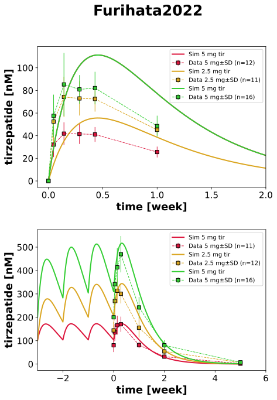

|  |
../../../experiments/studies/furihata2022.py
from typing import Dict
from sbmlsim.data import DataSet, load_pkdb_dataframe
from sbmlsim.fit import FitMapping, FitData
from sbmlutils.console import console
from pkdb_models.models.tirzepatide.experiments.base_experiment import (
TirzepatideSimulationExperiment,
)
from pkdb_models.models.tirzepatide.experiments.metadata import (
Tissue,
Route,
Dosing,
ApplicationForm,
Health,
Fasting,
TirzepatideMappingMetaData,
Coadministration,
)
from sbmlsim.plot import Axis, Figure
from sbmlsim.simulation import Timecourse, TimecourseSim
from pkdb_models.models.tirzepatide.helpers import run_experiments
class Furihata2022(TirzepatideSimulationExperiment):
"""Simulation experiment of Furihata2022."""
# Bodyweights for the cohorts (in kg)
bodyweights = {
"cohort1": 75.4,
"cohort2": 74.9,
"cohort3": 73.3,
}
cohorts = list(bodyweights.keys())
doses = {
5: [5] * 7,
10: [2.5] * 2 + [5] * 2 + [10] * 4,
15: [5] * 2 + [10] * 2 + [15] * 4,
}
colors = {
5: "crimson",
10: "goldenrod",
15: "limegreen",
}
def datasets(self) -> Dict[str, DataSet]:
dsets = {}
for fig_id in ["Fig1"]:
df = load_pkdb_dataframe(f"{self.sid}_{fig_id}", data_path=self.data_path)
for label, df_label in df.groupby("label"):
if label.startswith("tirzepatide_"):
dset = DataSet.from_df(df_label, self.ureg)
dset.unit_conversion("mean", 1 / self.Mr.tir)
dsets[label] = dset
return dsets
def simulations(self) -> Dict[str, TimecourseSim]:
Q_ = self.Q_
tcsims = {}
for cohort in self.cohorts:
for dose, dose_list in self.doses.items():
# single dose
single_dose = dose_list[0]
tc_single = Timecourse(
start=0,
end=14 * 24 * 60, # simulate for 1 week [min]
steps=2000,
changes={
**self.default_changes(),
"BW": Q_(self.bodyweights[cohort], "kg"),
"SCDOSE_tir": Q_(single_dose, "mg"),
},
)
tcsims[f"po_tir_{cohort}_{dose}"] = TimecourseSim(
timecourses=[tc_single],
time_offset=0,
)
timecourses = []
timecourses.append(
Timecourse(
start=0,
end=7 * 24 * 60,
steps=2000,
changes={
**self.default_changes(),
"BW": Q_(self.bodyweights[cohort], "kg"),
"SCDOSE_tir": Q_(single_dose, "mg"),
},
)
)
followup = dose_list[1:]
for i, d in enumerate(followup):
if i == len(followup) - 1:
tc = Timecourse(
start=0,
end=840 * 60, # [min]
steps=2000,
changes={
**self.default_changes(),
"BW": Q_(self.bodyweights[cohort], "kg"),
"SCDOSE_tir": Q_(d, "mg")},
)
else:
tc = Timecourse(
start=0,
end=7 * 24 * 60, # [min]
steps=2000,
changes={
**self.default_changes(),
"BW": Q_(self.bodyweights[cohort], "kg"),
"SCDOSE_tir": Q_(d, "mg")},
)
timecourses.append(tc)
tcsims[f"po_tir_multi_{cohort}_{dose}"] = TimecourseSim(
timecourses=timecourses,
time_offset=-7 * 24 * 60 * (len(timecourses) - 1),
)
return tcsims
def fit_mappings(self) -> Dict[str, FitMapping]:
mappings = {}
selected_cohort = "cohort3"
for dose, dose_list in self.doses.items():
mappings[f"fm_po_tir_{selected_cohort}_{dose}"] = FitMapping(
self,
reference=FitData(
self,
dataset=f"tirzepatide_{dose}",
xid="time",
yid="mean",
yid_sd="mean_sd",
count="count",
),
observable=FitData(
self, task=f"task_po_tir_{selected_cohort}_{dose}", xid="time", yid="[Cve_tir]"
),
metadata=TirzepatideMappingMetaData(
tissue=Tissue.PLASMA,
route=Route.PO,
application_form=ApplicationForm.SUBCUTANEOUS,
dosing=Dosing.SINGLE,
health=Health.T2DM,
fasting=Fasting.NR,
coadministration=Coadministration.NONE,
),
)
mappings[f"fm_po_tir_multi_{selected_cohort}_{dose}"] = FitMapping(
self,
reference=FitData(
self,
dataset=f"tirzepatide_{dose}_multi",
xid="time",
yid="mean",
yid_sd="mean_sd",
count="count",
),
observable=FitData(
self, task=f"task_po_tir_multi_{selected_cohort}_{dose}", xid="time", yid="[Cve_tir]"
),
metadata=TirzepatideMappingMetaData(
tissue=Tissue.PLASMA,
route=Route.PO,
application_form=ApplicationForm.SUBCUTANEOUS,
dosing=Dosing.MULTIPLE,
health=Health.T2DM,
fasting=Fasting.NR,
coadministration=Coadministration.NONE,
),
)
return mappings
def figures(self) -> Dict[str, Figure]:
fig = Figure(
experiment=self,
sid="Fig1",
num_rows=2,
name=f"{self.__class__.__name__}",
)
plots = fig.create_plots(
xaxis=Axis(self.label_time, unit=self.unit_time), legend=True
)
plots[0].set_xaxis(Axis(self.label_time, unit="week", min=-0.1, max=2))
plots[1].set_xaxis(Axis(self.label_time, unit="week", min=-3, max=6))
plots[0].set_yaxis(self.label_tir, unit=self.unit_tir)
plots[1].set_yaxis(self.label_tir, unit=self.unit_tir)
selected_cohort = "cohort3"
for dose, dose_list in self.doses.items():
single_dose = dose_list[0]
plots[0].add_data(
task=f"task_po_tir_{selected_cohort}_{dose}",
xid="time",
yid="[Cve_tir]",
label=f"Sim {single_dose} mg tir",
color=self.colors[dose],
)
plots[0].add_data(
dataset=f"tirzepatide_{dose}",
xid="time",
yid="mean",
yid_sd="mean_sd",
count="count",
label=f"Data {single_dose} mg",
color=self.colors[dose],
)
plots[1].add_data(
task=f"task_po_tir_multi_{selected_cohort}_{dose}",
xid="time",
yid="[Cve_tir]",
label=f"Sim {single_dose} mg tir",
color=self.colors[dose],
)
plots[1].add_data(
dataset=f"tirzepatide_{dose}_multi",
xid="time",
yid="mean",
yid_sd="mean_sd",
count="count",
label=f"Data {single_dose} mg",
color=self.colors[dose],
)
return {fig.sid: fig}
if __name__ == "__main__":
run_experiments(Furihata2022, output_dir=Furihata2022.__name__)
{kind=link}